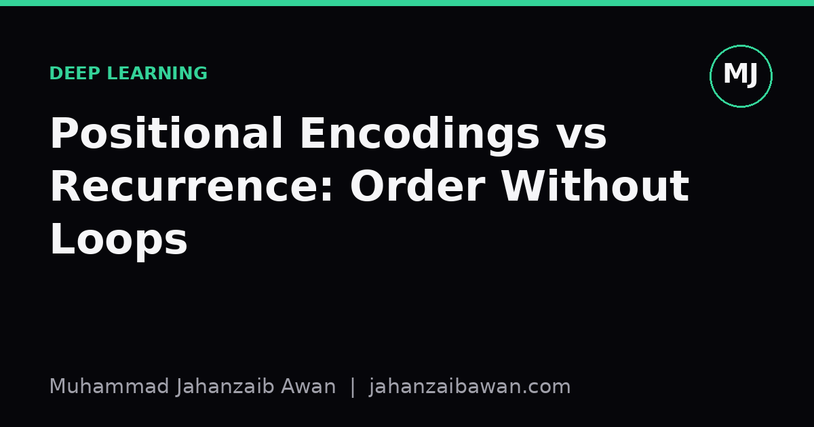

Positional Encodings vs Recurrence: Order Without Loops
Transformers process tokens all at once, recurrent networks one step at a time; both end up needing a way to tell a model where things sit in a sequence.

Why order needs to be taught at all
Here is a fact that surprises people the first time they sit with it: a basic self-attention layer, on its own, has no idea what order the tokens came in. If you feed it the words in 'the cat sat on the mat' and then feed it the same words shuffled, the attention computation treats both as the same multiset. Every token looks at every other token through a dot product of queries and keys, and that dot product does not care whether a token was first, third, or last. Attention is, in a precise sense, permutation equivariant.
That is a problem, because order is often the entire point. 'Dog bites man' and 'man bites dog' contain identical words and wildly different meanings. A model that cannot distinguish them is not going to get very far on translation, summarisation, or anything else involving syntax. So any architecture that processes a sequence needs some mechanism, explicit or implicit, for injecting a sense of position.
Recurrent networks solve this almost by accident, as a side effect of how they compute. Transformers solve it on purpose, by adding extra information to the input. These are two genuinely different philosophies, and understanding why each one works, and where each one strains, tells you something useful about sequence modelling more generally.
Recurrence: order as a consequence of computation
A recurrent neural network reads a sequence one element at a time, updating a hidden state at each step: h_t is a function of h_{t-1} and the current input x_t. Position is never represented as a number anywhere in the model. Instead, position is implicit in the order of computation itself. The hidden state at step five has, by construction, already absorbed everything from steps one through four, in that exact order, before it sees step five's input. You cannot compute h_5 without first computing h_4, h_3, h_2, and h_1 in sequence.
This gives recurrence a kind of order-awareness for free. Consider a toy task: detecting whether the word 'not' appears before the word 'good' in a short sentence, as a crude proxy for negation. A recurrent model can carry a simple flag in its hidden state once it sees 'not', and that flag persists forward through subsequent time steps, so by the time it reaches 'good' the state already encodes 'negation pending'. The order is baked into the sequential nature of the update rule; there is no separate positional signal to learn.
The cost is that this sequential dependency is exactly what makes RNNs slow to train. Step 500 cannot be computed until step 499 finishes, so you cannot parallelise across the sequence dimension during the forward pass. On a sequence of length 2,000, that is 2,000 sequential matrix operations that must happen one after another, even if you have a GPU sitting idle with capacity for thousands of parallel operations. There is also the well-documented difficulty of carrying information over long distances: gradients that have to flow back through hundreds of multiplicative steps tend to vanish or explode, which is why gated variants like LSTMs and GRUs were built, essentially to give the gradient a straighter path backward through time.

Positional encodings: order as an added signal
Transformers took a different route. Since self-attention processes all tokens in parallel with no inherent sense of sequence, the designers simply added a vector to each token's embedding that encodes its position, before anything else happens. The original approach used sinusoids: for position pos and dimension index i, you add sin(pos / 10000^(2i/d)) and cos(pos / 10000^(2i/d)) terms across the embedding dimensions. The specific formula matters less than what it achieves: every position gets a distinct, deterministic vector, and because sine and cosine of a sum can be written in terms of sine and cosine of the parts, the relative offset between two positions is recoverable through a fixed linear transformation of their encodings.
Concretely, imagine two tokens eight positions apart anywhere in a 512-token sequence. Their positional encodings differ by the same fixed linear relationship whether they appear near position 3 or near position 300, because the sinusoidal construction depends only on the offset, not on the absolute location. That is what lets the model generalise notions like 'the word three steps to the left' across the entire sequence, without ever being explicitly told what 'three steps to the left' means.
Other variants exist: learned positional embeddings, which simply let the model learn a vector per position from data rather than using a fixed formula, and relative position schemes, which inject position information directly into the attention score computation rather than into the input embedding. Rotary position embeddings, popular in recent large language models, rotate query and key vectors by an angle proportional to their position, which has the convenient property that the attention score between two tokens ends up depending only on their relative distance. Whichever variant you pick, the underlying move is the same: order is not a side effect of computation, it is a feature you deliberately manufacture and hand to the model.
This buys full parallelism: every position is processed simultaneously, so a 2,000-token sequence costs one pass through the attention mechanism rather than 2,000 sequential steps. The trade-off is that the model has to learn to use the positional signal correctly, and encodings tuned for sequences up to length 512 do not always extrapolate cleanly to length 4,000, which is precisely why extrapolation to longer contexts than seen in training remains an active area of engineering effort.
The practical takeaway
When I think about which approach suits a given problem, I come back to a simple trade: recurrence gets order for free but pays for it with sequential computation and fragile long-range gradients; positional encodings buy parallelism but require the model to learn how to exploit an artificial signal, and that signal has to be designed carefully to generalise beyond the lengths seen during training. Neither is strictly superior; they solve the same problem from opposite directions.
If you are building something today, the practical default for most text and sequence tasks is attention with some form of positional encoding, simply because training speed and parallelism tend to dominate once sequences and datasets get large. But it is worth remembering, especially when debugging a model that seems to ignore word order, that this sense of order is not something attention has inherently; it is something you gave it, and it is always worth checking that the positional scheme you chose actually matches the lengths and structure of the data you are feeding it.